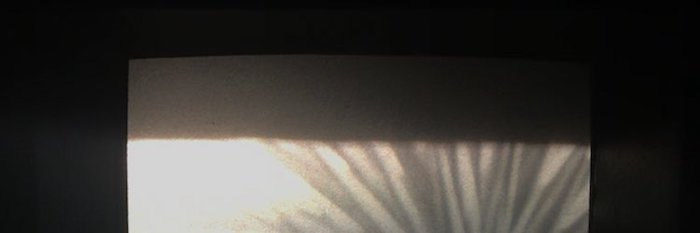

Patricia Ledesma Villon is a curator, moving image archivist, and researcher based in Minneapolis, Minnesota. She is Assistant Curator of Moving Image at the Walker Art Center(opens in a new tab).
Her interdisciplinary work focuses on contemporary and archival artist-made films and moving image exhibition, with experience in film and media archives, repertory film programming, and photochemical filmmaking and preservation. As an archivist, she has processed audiovisual collections and worked on related initiatives for the Walker's Ruben/Bentson Moving Image Collection, the Prelinger Archives, Trinh T. Minh-ha (What About China?, 2022), the Center for Asian American Media’s “Memories to Light” home movie project, and the Philippine Film Archive. She holds an MLIS with a specialization in Media Archival Studies from the University of California, Los Angeles.
Since 2019, she has been a member and co-organizer of Light Field(opens in a new tab), a collectively-run exhibition of recent and historical moving image art on film in the San Francisco Bay Area, where she was born and raised. She serves on the Board of Directors of Canyon Cinema(opens in a new tab) and the advisory editorial board of Artifact & Apparatus(opens in a new tab).
Contact: patriciaevillon@gmail.com // patricia.villon@walkerart.org